Basics of native windows in AIR
Adobe AIR 1.0 and later
|

For quick explanations and code examples of working with native
windows in AIR, see the following quick start articles on the Adobe
Developer Connection:
AIR provides an easy-to-use, cross-platform window API for creating
native operating system windows using Flash®, Flex™, and HTML programming techniques.
With AIR, you have a wide latitude in developing the appearance
of your application. The windows you create can look like a standard
desktop application, matching Apple style when run on the Mac, conforming
to Microsoft conventions when run on Windows, and harmonizing with
the window manager on Linux—all without including a line of platform-specific
code. Or you can use the skinnable, extensible chrome provided by
the Flex framework to establish your own style no matter where your
application is run. You can even draw your own window chrome with
vector and bitmap artwork with full support for transparency and
alpha blending against the desktop. Tired of rectangular windows? Draw
a round one.
Windows in AIR
AIR
supports three distinct APIs for working with windows:
-
The ActionScript-oriented NativeWindow class provides
the lowest level window API. Use NativeWindows in ActionScript and
Flash Professional-authored applications. Consider extending the
NativeWindow class to specialize the windows used in your application.
-
In the HTML environment, you can use the JavaScript Window
class, just as you would in a browser-based web application. Calls
to JavaScript Window methods are forwarded to the underlying native
window object.
-
The Flex framework mx:WindowedApplication and mx:Window classes provide
a Flex “wrapper” for the NativeWindow class. The WindowedApplication
component replaces the Application component when you create an AIR
application with Flex and must always be used as the initial window
in your Flex application.
ActionScript windows
When you create windows with the NativeWindow
class, use the Flash Player stage and display list directly. To
add a visual object to a NativeWindow, add the object to the display
list of the window stage or to another display object container
on the stage.
HTML windows
When you create HTML
windows, you use HTML, CSS, and JavaScript to display content. To
add a visual object to an HTML window, you add that content to the HTML
DOM. HTML windows are a special category of NativeWindow. The AIR
host defines a
nativeWindow
property in HTML windows
that provides access to the underlying NativeWindow instance. You
can use this property to access the NativeWindow properties, methods,
and events described here.
Note:
The JavaScript
Window object also has methods for scripting the containing window,
such as
moveTo()
and
close()
.
Where overlapping methods are available, you can use whichever method
that is convenient.
Flex Framework windows
The
Flex Framework defines its own window components. These components,
mx:WindowedApplication and mx:Window, cannot be used outside the
framework and thus cannot be used in HTML-based AIR applications.
The initial application window
The first
window of your application is automatically created for you by AIR.
AIR sets the properties and content of the window using the parameters
specified in the
initialWindow
element of the application
descriptor file.
If the root content is a SWF file, AIR creates
a NativeWindow instance, loads the SWF file, and adds it to the
window stage. If the root content is an HTML file, AIR creates an
HTML window and loads the HTML.
Native window classes
The
native window API contains the following classes:
|
Package
|
Classes
|
|
flash.display
|
|
|
flash.events
|
|
Native window event flow
Native windows dispatch events to notify interested
components that an important change is about to occur or has already
occurred. Many window-related events are dispatched in pairs. The
first event warns that a change is about to happen. The second event
announces that the change has been made. You can cancel a warning
event, but not a notification event. The following sequence illustrates
the flow of events that occurs when a user clicks the maximize button
of a window:
-
The
NativeWindow object dispatches a
displayStateChanging
event.
-
If no registered listeners cancel the event, the window maximizes.
-
The
NativeWindow object dispatches a
displayStateChange
event.
In
addition, the NativeWindow object also dispatches events for related changes
to the window size and position. The window does not dispatch warning
events for these related changes. The related events are:
-
A
move
event
is dispatched if the top, left corner of the window moved because
of the maximize operation.
-
A
resize
event
is dispatched if the window size changed because of the maximize
operation.
A
NativeWindow object dispatches a similar sequence of events when minimizing,
restoring, closing, moving, and resizing a window.
The warning events are
only dispatched when a change is initiated through window chrome
or other operating-system controlled mechanism. When you call a
window method to change the window size, position, or display state, the
window only dispatches an event to announce the change. You can dispatch
a warning event, if desired, using the window
dispatchEvent()
method,
then check to see if your warning event has been canceled before proceeding
with the change.
For detailed information about
the window API classes, methods, properties, and events, see the
Adobe AIR API Reference for HTML Developers
.
Properties controlling native window style and behavior
The
following properties control the basic appearance and behavior of
a window:
-
type
-
systemChrome
-
transparent
-
owner
When you create a window, you set these properties on the NativeWindowInitOptions
object passed to the window constructor. AIR reads the properties
for the initial application window from the application descriptor.
(Except the
type
property, which cannot be set
in the application descriptor and is always set to
normal
.)
The properties cannot be changed after window creation.
Some settings of these properties are mutually incompatible:
systemChrome
cannot
be set to
standard
when either
transparent
is
true
or
type
is
lightweight
.
Window types
The
AIR window types combine chrome and visibility attributes of the
native operating system to create three functional types of window.
Use the constants defined in the NativeWindowType class to reference
the type names in code. AIR provides the following window types:
|
Type
|
Description
|
|
Normal
|
A typical window. Normal windows use the
full-size style of chrome and appear on the Windows taskbar and the
Mac OS X window menu.
|
|
Utility
|
A tool palette. Utility windows use a slimmer
version of the system chrome and do not appear on the Windows taskbar
and the Mac OS X window menu.
|
|
Lightweight
|
Lightweight windows have no chrome and do
not appear on the Windows taskbar or the Mac OS X window menu. In
addition, lightweight windows do not have the System (Alt+Space)
menu on Windows. Lightweight windows are suitable for notification
bubbles and controls such as combo-boxes that open a short-lived
display area. When the lightweight
type
is used,
systemChrome
must
be set to
none
.
|
Window chrome
Window
chrome is the set of controls that allow users to manipulate a window
in the desktop environment. Chrome elements include the title bar,
title bar buttons, border, and resize grippers.
System chrome
You can set the
systemChrome
property
to
standard
or
none
. Choose
standard
system
chrome to give your window the set of standard controls created
and styled by the user’s operating system. Choose
none
to
provide your own chrome for the window. Use the constants defined
in the NativeWindowSystemChrome class to reference the system chrome
settings in code.
System chrome is managed by the system.
Your application has no direct access to the controls themselves,
but can react to the events dispatched when the controls are used.
When you use standard chrome for a window, the
transparent
property
must be set to
false
and the
type
property
must be
normal
or
utility
.
Custom chrome
When you create a window with no system chrome,
then you must add your own chrome controls to handle the interactions
between a user and the window. You are also free to make transparent,
non-rectangular windows.
Window transparency
To
allow alpha blending of a window with the desktop or other windows,
set the window
transparent
property to
true
.
The
transparent
property must be set before the
window is created and cannot be changed.
A transparent window has no default background. Any window area
not containing an object drawn by the application is invisible.
If a displayed object has an alpha setting of less than one, then
anything below the object shows through, including other display
objects in the same window, other windows, and the desktop.
Transparent windows are useful when you want to create applications
with borders that are irregular in shape or that “fade out” or appear
to be invisible. However, rendering large alpha-blended areas can
be slow, so the effect should be used conservatively.
Important:
On Linux, mouse events do not pass through
fully transparent pixels. You should avoid creating windows with
large, fully transparent areas since you may invisibly block the
user’s access to other windows or items on their desktop. On Mac OS
X and Windows, mouse events do pass through fully transparent pixels.
Transparency cannot be used with windows that have system chrome.
In addition, SWF and PDF content in HTML may not display in transparent
windows. For more information, see
Considerations when loading SWF or PDF content in an HTML page
.
The static
NativeWindow.supportsTransparency
property
reports whether window transparency is available. When transparency
is not supported, the application is composited against a black
background. In these cases, any transparent areas of the application
display as an opaque black. It is a good practice to provide a fallback
in case this property tests
false
. For example,
you could display a warning dialog to the user, or display a rectangular,
non-transparent user interface.
Note that transparency is always supported by the Mac and Windows
operating systems. Support on Linux operating systems requires a
compositing window manager, but even when a compositing window manager
is active, transparency can be unavailable because of user display
options or hardware configuration.
Transparency in an HTML application window
By default the background of HTML content
displayed in HTML windows and HTMLLoader objects is opaque, event
if the containing window is transparent. To turn off the default
background displayed for HTML content, set the
paintsDefaultBackground
property
to
false
. The following example creates an HTMLLoader
and turns off the default background:
var htmlView:HTMLLoader = new HTMLLoader();
htmlView.paintsDefaultBackground = false;
This example uses JavaScript to turn off the default background
of an HTML window:
window.htmlLoader.paintsDefaultBackground = false;
If an element in the HTML document sets a background color, the
background of that element is not transparent. Setting a partial
transparency (or opacity) value is not supported. However, you can
use a transparent PNG-format graphic as the background for a page
or a page element to achieve a similar visual effect.
Window ownership
One window can
own
one or more other windows. These
owned windows always appear in front of the master window, are minimized
and restored along with the master window, and are closed when the
master window is closed. Window ownership cannot be transfered to
another window or removed. A window can only be owned by one master
window, but can own any number of other windows.
You can use window ownership to make it easier to manage windows
used for tool palettes and dialogs. For example, if you displayed
a Save dialog in association with a document window, making the
document window own the dialog will keep the dialog in front of
the document window automatically.
A visual window catalog
The following table illustrates the visual effects of different
combinations of window property settings on the Mac OS X, Windows,
and Linux operating systems:
|
Window settings
|
Mac OS X
|
Microsoft Windows
|
Linux
*
|
|
Type: normal
SystemChrome: standard
Transparent:
false
|
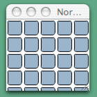
|
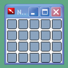
|
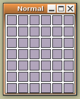
|
|
Type: utility
SystemChrome: standard
Transparent:
false
|
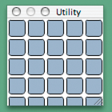
|
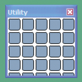
|
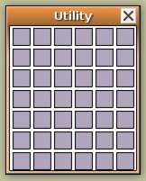
|
|
Type: Any
SystemChrome: none
Transparent:
false
|
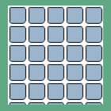
|
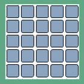
|
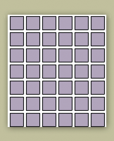
|
|
Type: Any
SystemChrome: none
Transparent:
true
|
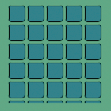
|
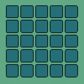
|
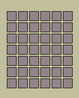
|
|
mxWindowedApplication or mx:Window
Type:
Any
SystemChrome: none
Transparent: true
|
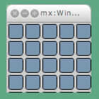
|
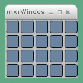
|
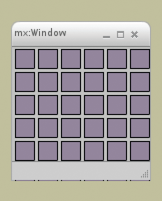
|
*
Ubuntu with Compiz window manager
Note:
The
following system chrome elements are not supported by AIR: the Mac
OS X Toolbar, the Mac OS X Proxy Icon, Windows title bar icons,
and alternate system chrome.
|
|
|
|
|